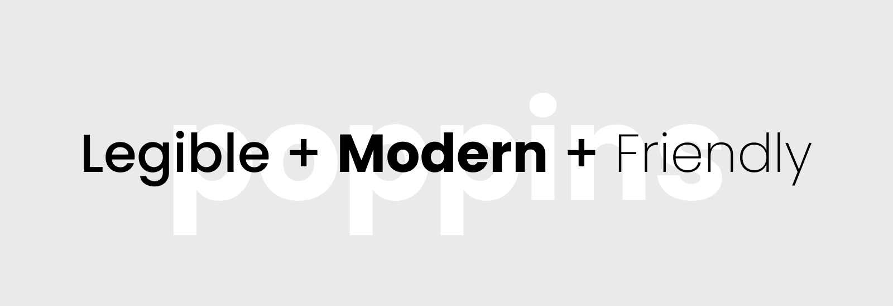
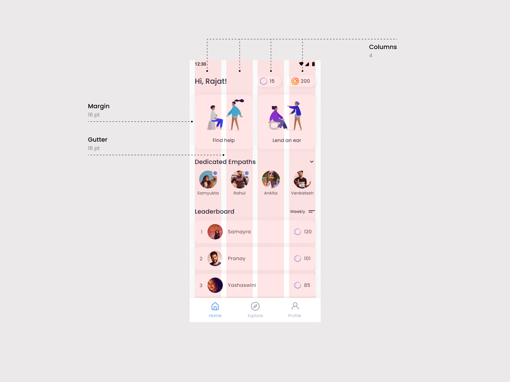

Overview
All Ears is a mental health app that connects people with mental health experts.
I got an opportunity to work with this early stage startup to create the design system and design the user interface of the app.
The process
How did I design the interface?
Wireframes
I started off with wireframes made in the form of paper sketches to visualize the basic app interface. Multiple discussions with founders were required to finalize the structure of the app.
Color palette
Once the structure was in place, I came up with a color palette for the app. The aim was to reflect the emotions of the app in an appropriate manner.
We wanted All Ears to represent calmness, simplicity, and trustworthiness because these are the important aspects for someone in need of mental health support.
Blue checked all these boxes of All Ears emotions. We did not want it to be particularly bright and saturated, and at the same time, we had to make sure it did not look dull and gloomy. To achieve this balance, a soothing tint of blue was chosen as primary color to give a feeling of calmness and support. Rest of the palette needed for supporting the UI elements was generated from tints and shades of the primary color.
Typography
While selecting the typeface, the goal was to be clear and simple. The desired features of the typeface were high legibility, modern look, and friendly nature.
After considering several available options, 'Poppins' was chosen because we wanted the typographic style to be familiar for users.

I created typography styles that all the textual content in the app would follow. These styles were included as a part of the design system.
Design System
Based on the UI design decisions taken in previous steps, I created a preliminary design system consisting of major components that would be used in the app interface.
Layout
Though most of the structure was guided by the wireframes, I defined minute specifications of the layout while designing the high-fidelity designs. Inspired by the Material Guidelines from Google, there is a 4-column layout with a margin of 16 pt and gutter of 16 pt.

Reflection
What did I learn?
There is a huge difference between designing a concept and designing a practical, real world application that will be used by people. Starting from scratch and incorporating all use cases is a challenging task.